¿Dudas en la calle? Tocá el signo de pregunta arriba a la derecha de cualquier pantalla y se abre este manual.
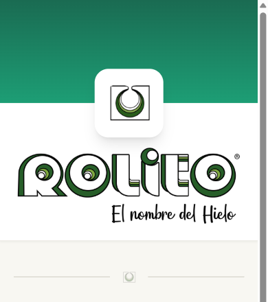
¿Te olvidaste el PIN? Pedile al administrador que te lo resetee.
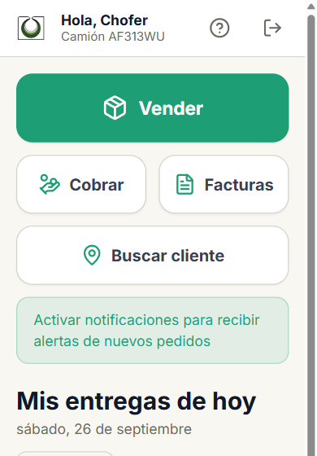
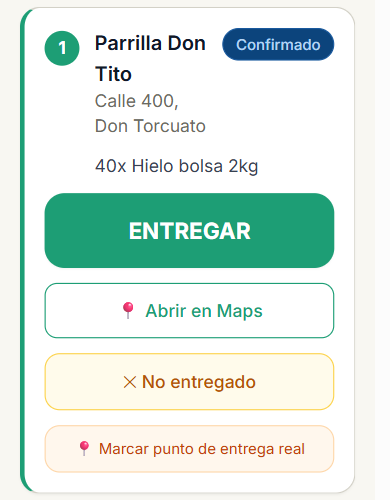
Arriba están los botones grandes:
Abajo van tus paradas, en el orden que armó logística. Cada una tiene:
La barra de abajo tiene Entregas, Ruta, Clientes y PDF (la hoja de ruta para imprimir).
Tocá ENTREGAR en la parada. Son tres pasos y al final sale el comprobante solo.
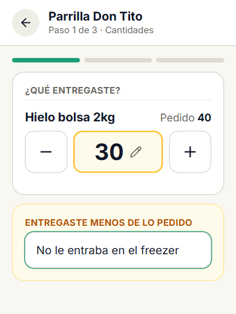
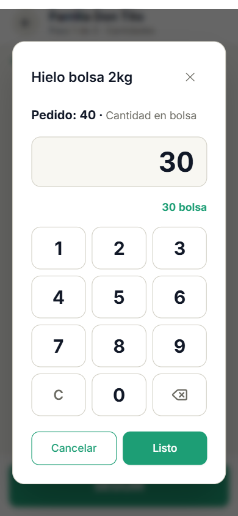
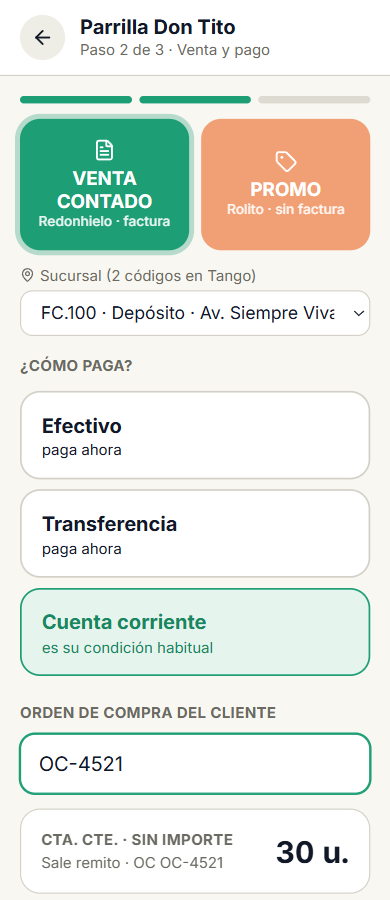
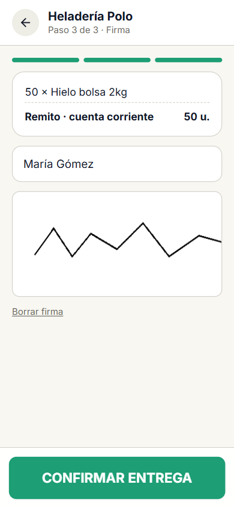
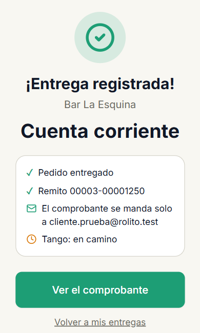
| Elegiste | Sale |
|---|---|
| Venta contado · efectivo o transferencia | Factura electrónica (llega en unos segundos con señal) |
| Venta contado · cuenta corriente | Remito, sin precios. La factura la hace la oficina |
| Promo · cualquier forma de pago | Factura X |
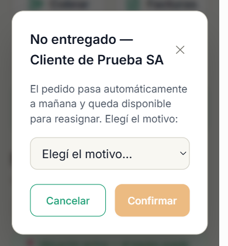
El pedido pasa solo a mañana y logística lo puede reasignar. Si el cliente tiene mail, le llega el aviso.
¿Encontraste el lugar exacto de entrega? Tocá Marcar punto de entrega real parado en la puerta: la próxima vez el mapa te lleva ahí.
Para un cliente que te para en la calle o te pide más de lo que tenía el pedido.
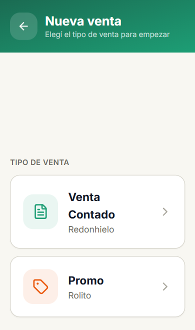
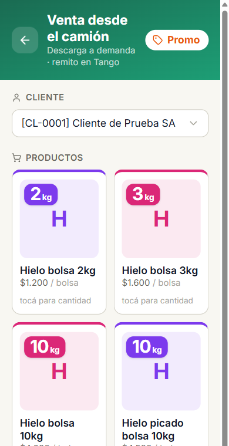
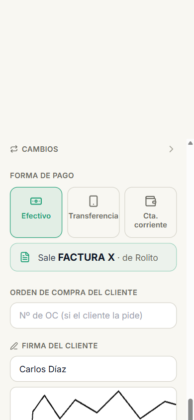
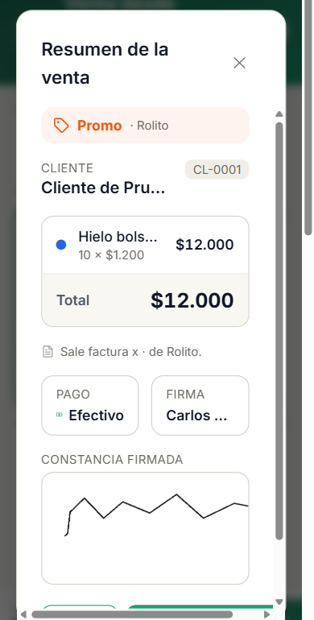
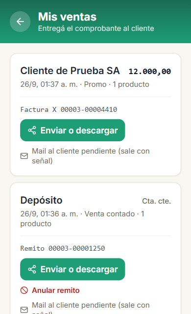
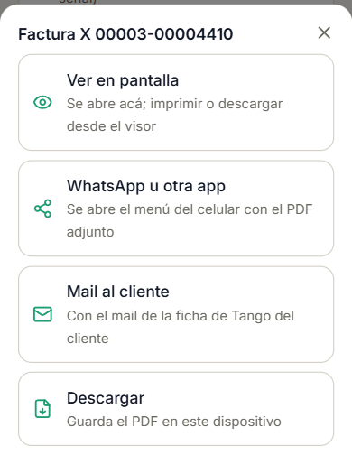
Debajo de cada venta ves qué pasó con el mail automático:
| Dice | Qué hacés |
|---|---|
| Mail entregado | Nada, le llegó. |
| Mail al cliente pendiente (sale con señal) | Nada, sale solo cuando haya señal. |
| Cliente sin mail en Tango | Mandalo por WhatsApp o escribí el mail a mano. |
| El mail rebotó | Avisá a facturación: el mail del cliente está mal en Tango. |
| Qué salió | Qué hacés |
|---|---|
| Remito (cuenta corriente), hace menos de 1 hora | En , tocá Anular remito, elegí qué pasó y confirmá. No necesitás autorización. |
| Remito, hace más de 1 hora | Pedile la anulación a la oficina. |
| Factura o Factura X | No la anulás vos: la pide caja cuando liquidás. En ves el estado. |
Cuando la venta queda anulada aparece Hacer la venta correcta: abre Vender con todo cargado. Corregí lo que estaba mal y confirmá.
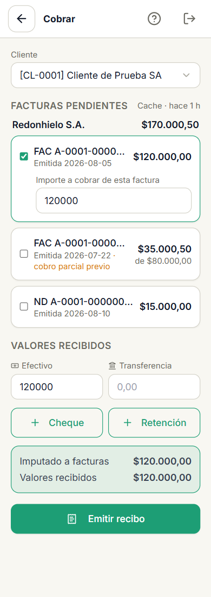
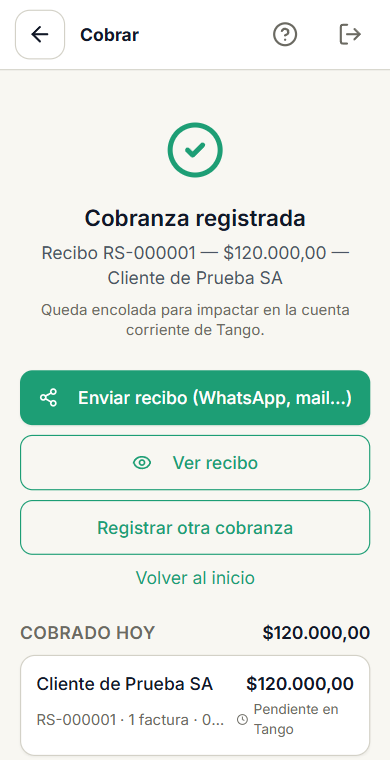
¿Te adelanta plata sin factura? Usá Cobrar a cuenta: queda como saldo a favor.
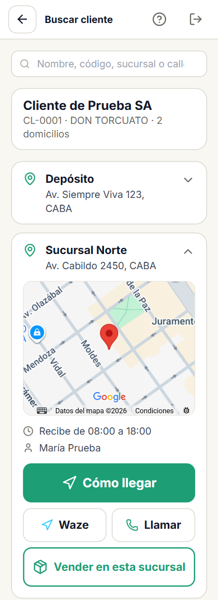
Si no aparece la dirección o está mal, avisale a logística.
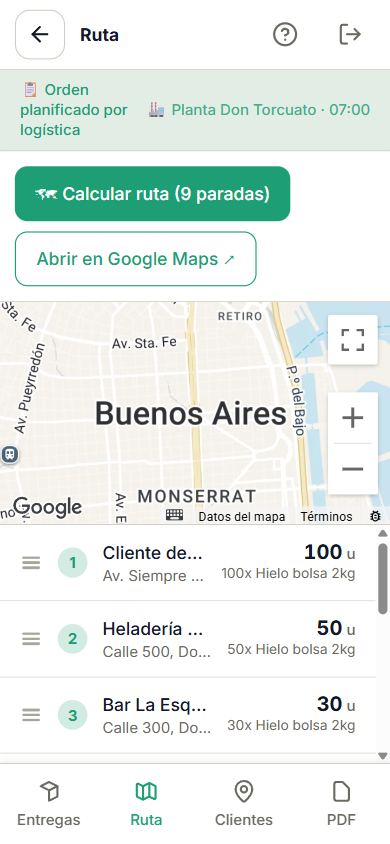
El orden es el que armó logística. Para entregar volvé a Entregas: desde el mapa no se entrega.
En el inicio tenés dos tarjetas para controlar tu día:
| Si pasa esto | Hacé esto |
|---|---|
| Me quedé sin señal | Seguí trabajando. Entregas, ventas y cobranzas se guardan en el teléfono y se suben solas. |
| "Ventas todavía no subieron al servidor" | Buscá señal y esperá que desaparezca el aviso. No rindas en caja antes. |
| "Facturando…" hace rato | Necesita señal. Sale sola cuando vuelve. |
| "ARCA rechazó la factura" | Avisá a la oficina. |
| El cliente quiere el comprobante en otro mail | Facturas → Enviar o descargar → Mail al cliente, borrá el mail y escribí el nuevo. |
| "El mail rebotó" | Mandalo por WhatsApp y avisá a facturación para que corrijan el mail en Tango. |
| "Sin precio en Tango" | Ese producto no se puede vender a ese cliente. Avisá a la oficina. |
| "Cliente inhabilitado en Tango" | No le podés vender. Avisá a la oficina. |
| "No se le puede hacer una venta contado" | Hacela en cuenta corriente o Promo y avisá a la oficina que le faltan datos. |
| La cuenta corriente aparece apagada | El cliente es de contado en Tango: cobrale en efectivo o transferencia. |
| Un producto dice "no está en el catálogo" | No va a salir en el comprobante. Avisá a la oficina. |
| "El COT todavía no salió" | No salgas: pedíselo al muelle. |
| No hay dársena libre | Esperá: aparece cuando se libere una. El muelle ya sabe que volviste. |
| Me olvidé el PIN | Pedile al administrador que te lo resetee. |